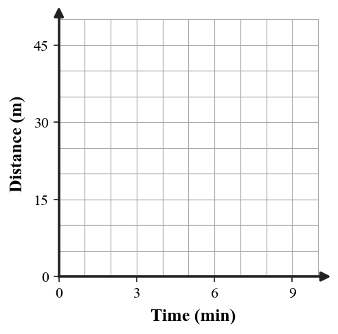
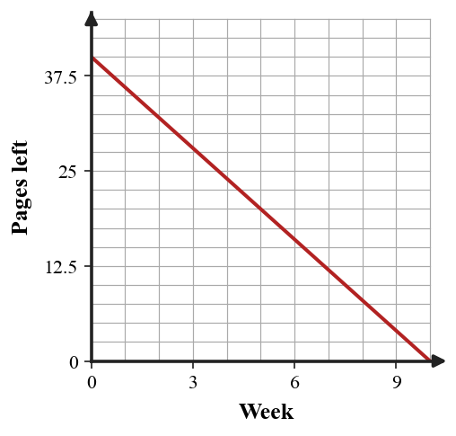
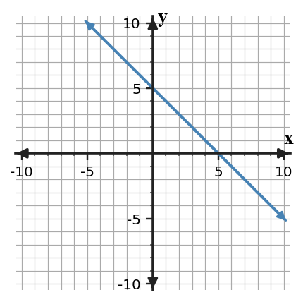
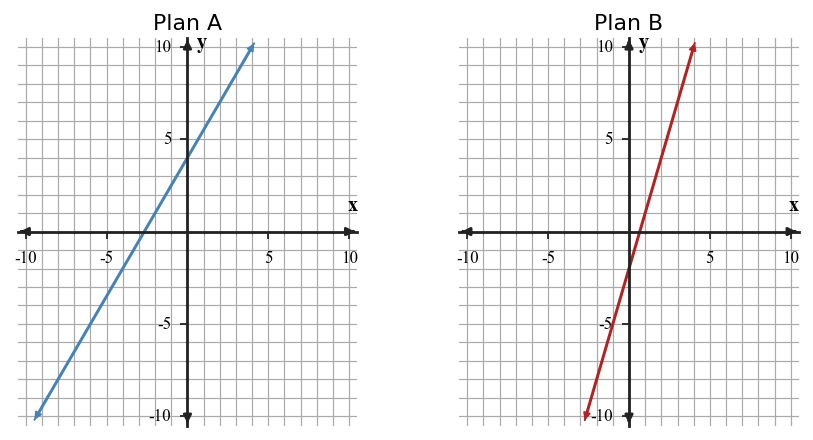

0B-S1-DOK1.01
For the ordered pair $(-3,{5})$, identify the $x$-coordinate and the $y$-coordinate.
Essential Standard: Students will represent, interpret, and justify relationships on the coordinate plane by connecting points, axes, intercepts, rates of change, and linear representations to mathematical situations.
Learning Target: Students will interpret and create graphs on the coordinate plane while connecting points, axes, intercepts, and graphical information to mathematical situations.
For the ordered pair $(-3,{5})$, identify the $x$-coordinate and the $y$-coordinate.
A point is located at $({4},-2)$. State the quadrant and explain which signs tell you.
Which axis contains every point whose $y$-coordinate is ${0}$? Give one example ordered pair on that axis.
A point has coordinates $({0},{7})$. Which axis is it on? Give another ordered pair on the same axis.
A graph uses the horizontal axis for time in minutes and the vertical axis for distance in meters. What does the point $({6},{18})$ mean in the context?
Read the table of points and name the $y$-intercept.
| Point | $x$ | $y$ |
|---|---|---|
| A | 0 | 7 |
| B | 2 | 11 |
| C | 4 | 15 |
Which point in the table lies on the $x$-axis? Name the $x$-intercept.
| Point | $x$ | $y$ |
|---|---|---|
| A | -3 | 0 |
| B | 0 | 6 |
| C | 2 | 10 |
For the graph shown, identify the $x$-intercept and $y$-intercept.

For the context graph shown, identify the starting distance and describe what the vertical intercept means.

On a coordinate plane, what does it mean if a point has a negative $x$-coordinate and a positive $y$-coordinate?
A student labels the horizontal axis “number of students” and the vertical axis “class period” for a graph comparing class period to number of students. Which quantity is the input, and which is the output?
Which point is closest to the origin: $({2},{1})$, $(-1,{3})$, or $({4},{0})$? Use coordinate distance in your explanation.
A graph crosses the vertical axis at $({0},{12})$. In a situation about a water tank, what could ${12}$ represent?
In a tickets-remaining situation, the graph includes the point $({8},{0})$. Interpret the ${8}$ in context.
Which ordered pair has the greater $y$-value: $(-4,{6})$ or $({5},{2})$? State only the evidence from the coordinates.
Explain the difference between the ordered pairs $({3},{8})$ and $({8},{3})$ in terms of input and output.
Plot the points $({0},{2})$, $({2},{6})$, and $({4},{10})$ on the coordinate plane. Then describe the trend.

A class records distance walked every ${2}$ minutes.
| Time (min) | 0 | 2 | 4 | 6 | 8 |
|---|---|---|---|---|---|
| Distance (m) | 0 | 12 | 24 | 36 | 48 |
Choose a scale, graph the data, and identify what one grid square should represent on each axis.

The line shown models profit after selling items. Identify the break-even point and explain how the graph shows it.

A graph of height over time passes through $({0},{3})$, $({4},{11})$, and $({8},{19})$. Create a table and describe what the point $({4},{11})$ means.
Use the graph shown to estimate whether the relationship is increasing or decreasing, then support your answer with two coordinate features.
A point $({5},{20})$ on a graph means a student answered ${20}$ questions after ${5}$ minutes. What should the axis labels be? Then write another point that would fit the same pattern if the rate is constant.
Make a coordinate graph for the ordered pairs in the table, then state the vertical intercept.
| $x$ | 0 | 1 | 2 | 3 | 4 |
|---|---|---|---|---|---|
| $y$ | 4 | 7 | 10 | 13 | 16 |
The scatter plot shows practice days and score gain. Describe the overall association and identify one point that supports your description.

A student wants to graph test score versus hours studied. Explain which variable should go on the horizontal axis and why.
For a graph of total cost versus number of notebooks, the point $({0},{2})$ appears before any notebooks are bought. Interpret this point and decide whether it is reasonable.
Create three ordered pairs for a situation that starts at ${8}$ and increases by ${3}$ each time the input increases by ${1}$. Then identify the intercept.
A line passes through $(-2,{0})$ and $({0},{4})$. Find both intercepts and describe what each intercept tells you about the graph.
A student says the graph shown starts at zero because the line eventually crosses the $x$-axis. Critique the statement using both intercepts and the meaning of the axes.
A graph of a runner’s distance starts at $({0},{10})$ and increases steadily. Is it reasonable to say the runner began ${10}$ meters from the sensor? Explain using the intercept and context.
You need to graph a school hallway walk where distance is measured every ${30}$ seconds for ${5}$ minutes. Construct a strategy for choosing axis scales so the graph is readable and precise.
Compare the table and the graph. Decide whether they could represent the same relationship, and justify your conclusion with at least two pieces of evidence.
| $x$ | 0 | 2 | 4 | 6 |
|---|---|---|---|---|
| $y$ | 10 | 20 | 30 | 40 |
Design a short coordinate-plane model for a classroom situation involving a starting amount and steady change. Include axis labels, three ordered pairs, a graph, and a sentence explaining one intercept.
Create a coordinate graph with constraints: the $y$-intercept must be ${6}$, one point must be $({4},{14})$, and the context must make negative outputs unreasonable. Then explain why your graph satisfies all constraints.
Learning Target: Students will identify patterns and represent relationships using input-output rules, tables, words, and symbols.
Use the rule “multiply the input by ${4}$, then add ${1}$.” What is the output when the input is ${6}$?
For the rule $y={3}x+2$, identify the input variable and the output variable.
Complete the missing output.
| Input | 1 | 2 | 3 | 4 |
|---|---|---|---|---|
| Output | 5 | 7 | 9 | ? |
Write the next three numbers in the pattern: ${5}$, ${8}$, ${11}$, ${14}$, ...
Which phrase matches the rule $y=x-7$? A: add ${7}$ to the input. B: subtract ${7}$ from the input. C: multiply by ${7}$.
Identify the ordered pair from the table when $x={3}$.
| $x$ | 0 | 1 | 2 | 3 |
|---|---|---|---|---|
| $y$ | 4 | 6 | 8 | 10 |
A pattern starts at ${2}$ and adds ${5}$ each step. What are the first four outputs for inputs ${0}$, ${1}$, ${2}$, and ${3}$?
For the rule $y={10}-x$, find the output when $x={4}$.
Which table shows the rule $y={2}x$?
| Choice | $x$ values | $y$ values |
|---|---|---|
| A | 1, 2, 3 | 3, 4, 5 |
| B | 1, 2, 3 | 2, 4, 6 |
| C | 1, 2, 3 | 1, 4, 9 |
In the verbal rule “subtract ${3}$, then double,” which operation happens first?
Find the input that gives output ${15}$ for the rule $y=x+9$.
State whether $({4},{17})$ fits the rule $y={4}x+1$.
Complete the table for $y=x^2+1$.
| $x$ | 0 | 1 | 2 | 3 |
|---|---|---|---|---|
| $y$ | 1 | 2 | ? | 10 |
Translate the words “triple the input and subtract ${2}$” into a symbolic rule.
A machine uses the rule $y={3}x+1$. Find the output when the input is ${7}$.
Write one possible input-output rule for the pairs $({1},{6})$, $({2},{7})$, $({3},{8})$.
Generate a table for the rule $y={2}x+5$ using inputs ${0}$ through ${5}$. Then write one sentence describing the pattern in the outputs.
A pattern has outputs ${4}$, ${9}$, ${14}$, ${19}$ for inputs ${0}$, ${1}$, ${2}$, ${3}$. Write a rule and predict the output for input ${10}$.
Use the table to write a rule in words and symbols.
| Input | 0 | 1 | 2 | 3 | 4 |
|---|---|---|---|---|---|
| Output | 3 | 7 | 11 | 15 | 19 |
The rule is “start at ${12}$ and subtract ${2}$ for each input step.” Build a table for inputs ${0}$ through ${6}$ and identify when the output reaches ${0}$.
A student wrote $y=x+4$ for a table where inputs ${1}$, ${2}$, ${3}$ have outputs ${6}$, ${8}$, ${10}$. Write the correct rule and explain the repeated change.
Create a verbal rule that matches $y={5}x-1$, then find the output when $x={8}$.
Decide whether each ordered pair fits the rule $y={3}x-2$: $({2},{4})$, $({5},{13})$, and $({6},{16})$. Show your checks.
A table begins with input ${0}$ and output ${7}$. Each time the input increases by ${1}$, the output increases by ${6}$. Complete five rows and write the symbolic rule.
Two rules are $A(x)={2}x+9$ and $B(x)={4}x+1$. Evaluate both at $x={3}$ and $x={6}$, then describe which output is larger at each input.
Write an input-output rule for “a quiz has ${20}$ points, and a student loses ${2}$ points for each mistake.” Then find the score for ${6}$ mistakes.
A pattern doubles the input and then adds ${3}$. Another pattern adds ${3}$ and then doubles. Compare the outputs when the input is ${5}$.
Build a table and ordered pairs for the rule $y={18}-{3}x$ for inputs ${0}$ to ${5}$. Identify the first input with output less than ${5}$.
The rule and table are supposed to match. Find the first mismatch, explain the correct value, and revise the table.
Rule: $y={2}x+5$
| $x$ | 0 | 1 | 2 | 3 | 4 |
|---|---|---|---|---|---|
| $y$ | 5 | 7 | 8 | 11 | 13 |
For the outputs ${3}$, ${8}$, ${13}$, ${18}$, analyze the pattern using two methods: repeated change and a symbolic rule. Explain how both methods support the same prediction for input ${12}$.
A rule has the same output for every input. Construct an example table and symbolic rule, then explain why the output is constant even as the input changes.
A student says the rule for the table is $y={4}x+2$ because the outputs go up by ${4}$. Critique the claim and write the corrected rule.
| $x$ | 1 | 2 | 3 | 4 |
|---|---|---|---|---|
| $y$ | 2 | 6 | 10 | 14 |
A school club’s table shows inputs ${0}$, ${1}$, ${2}$, ${3}$ with outputs ${10}$, ${14}$, ${17}$, ${22}$. Revise the flawed model by deciding whether one output is likely an error, replacing it, and writing a rule that fits the corrected table.
Create a complete representation set for one input-output relationship: a verbal rule, a symbolic rule, a five-row table, and three ordered pairs. The output must increase by the same amount each step and must not start at zero.
Learning Target: Students will recognize constant rate of change in tables, graphs, visual patterns, and situations.
Find the repeated change in the outputs.
| Input | 0 | 1 | 2 | 3 |
|---|---|---|---|---|
| Output | 6 | 10 | 14 | 18 |
Does the table show equal input steps?
| $x$ | 0 | 1 | 3 | 6 |
|---|---|---|---|---|
| $y$ | 2 | 5 | 11 | 20 |
State the rate of change for a pattern that adds ${7}$ tiles each figure.
A graph is a straight line rising from left to right. Is its rate of change positive, negative, or zero?
In the equation $y={5}x+2$, identify the rate of change.
Find the output of $y=-{3}x+12$ when $x={4}$.
Complete the next output if the rate of change is ${4}$.
| Input | 1 | 2 | 3 | 4 |
|---|---|---|---|---|
| Output | 9 | 13 | 17 | ? |
Which description has a constant rate: adding ${3}$ pages every night or doubling pages every night?
Use two points on the graph to identify whether the relationship is increasing or decreasing and state the change per week.

What is the starting value in the graph shown?

Find the change from Figure ${2}$ to Figure ${5}$ if a linear pattern grows by ${6}$ tiles per figure.
Classify the rate of change as positive, negative, or zero: a stack of cups loses ${2}$ cups each time one is removed.
Identify the table with constant change.
| Choice | Outputs |
|---|---|
| A | 2, 4, 8, 16 |
| B | 5, 8, 11, 14 |
| C | 1, 4, 9, 16 |
A line has rate of change ${0}$. Describe what its graph looks like.
What does “constant rate of change” mean in a table?
A pattern starts at ${9}$ and changes by $-{2}$ each step. Name the starting value and the rate of change.
Complete the table for a pattern that starts at ${5}$ and increases by ${3}$ for each new figure.
| Figure | 0 | 1 | 2 | 3 | 4 | 5 |
|---|---|---|---|---|---|---|
| Tiles | 5 |
Figure ${3}$ has ${11}$ tiles and Figure ${4}$ has ${13}$ tiles. If the pattern grows linearly, find the number of tiles in Figure ${10}$ and Figure ${100}$.
Determine whether the table has a constant rate of change. Show the differences in outputs for equal input steps.
| $x$ | 0 | 2 | 4 | 6 |
|---|---|---|---|---|
| $y$ | 1 | 7 | 13 | 19 |
The graph shows a constant rate model for tiles. Use the graph to find the rate of change and starting value.
A reading plan starts with ${40}$ pages left and decreases by ${4}$ pages per week. Complete a table for weeks ${0}$ through ${6}$ and state the rate of change.
Compare Graph A and Graph B. Which has the greater rate of change? Use steepness and one numerical feature.

A visual pattern has ${4}$ tiles in Figure ${0}$, ${9}$ in Figure ${1}$, ${14}$ in Figure ${2}$, and ${19}$ in Figure ${3}$. Write the repeated change and predict Figure ${8}$.
Make a graph for the table and describe how the graph shows constant rate of change.
| $x$ | 0 | 1 | 2 | 3 | 4 |
|---|---|---|---|---|---|
| $y$ | 12 | 9 | 6 | 3 | 0 |
A table has values $({0},{2})$, $({2},{8})$, $({4},{14})$, $({7},{23})$. Determine whether the rate is constant even though the input steps are not all ${1}$.
A pattern increases by ${2}$, then ${3}$, then ${4}$. Explain why it is not linear, even though it always increases.
Create a table with a constant rate of change of $-{5}$ and a starting value of ${30}$. Use inputs ${0}$ through ${5}$.
A graph begins at $({0},{8})$ and passes through $({3},{20})$. Find the rate of change and predict the output at $x={6}$.
Compare the table and graph. Decide whether they show the same constant rate of change and starting value. Use evidence from both representations.
| Figure | 0 | 1 | 2 | 3 |
|---|---|---|---|---|
| Tiles | 2 | 5 | 8 | 11 |
A student claims a pattern is linear because the outputs keep getting larger. Use the values ${2}$, ${5}$, ${9}$, ${14}$, ${20}$ to decide whether the claim is reasonable.
Analyze the pattern two ways: by calculating repeated differences and by writing a rule from the starting value and rate. Explain how each method predicts Figure ${15}$.
| Figure | 0 | 1 | 2 | 3 | 4 |
|---|---|---|---|---|---|
| Tiles | 6 | 10 | 14 | 18 | 22 |
A graph passes through $({0},{6})$, $({2},{14})$, and $({4},{22})$. A table shows $x$-values ${0}$, ${2}$, ${4}$ with outputs ${6}$, ${14}$, ${23}$. A context says the amount starts at ${6}$ and increases by ${4}$ for each input step. Construct a strategy for testing whether all three representations show the same constant rate of change. Your strategy must include at least three checks.
Create a linear pattern with constraints: Figure ${0}$ has a nonzero number of tiles, Figure ${5}$ has more than ${25}$ tiles, and the growth is not ${1}$, ${2}$, or ${5}$ tiles per figure. Provide a table, rule, and graph.
Two students propose ways to model a reading plan that starts with ${40}$ pages left and decreases by ${4}$ pages each week. One uses a table for weeks ${0}$ through ${5}$; the other uses a graph with labeled intercepts $({0},{40})$ and $({10},{0})$. Recommend which representation should be used to convince a classmate that the rate is constant, or explain how to combine them.
Learning Target: Students will represent linear relationships using tables, graphs, equations, and contextual descriptions.
In $y={4}x+9$, identify the slope and the starting value.
Write the equation for a line with starting value ${3}$ and rate of change ${5}$.
Which equation has slope $-{2}$? A: $y={2}x-4$ B: $y=-{2}x+7$ C: $y=x-2$
For $y={6}x+1$, find $y$ when $x={4}$.
A relationship starts at ${8}$ and adds ${3}$ each step. What is the $y$-intercept?
Complete the missing value for the linear relationship.
| $x$ | 0 | 1 | 2 | 3 |
|---|---|---|---|---|
| $y$ | 7 | 11 | 15 | ? |
State whether $y={2}x+6$ is linear and name one reason.
What part of $y=mx+b$ represents the starting value?
In $y=mx+b$, what does the coefficient of $x$ represent?
Find the starting value in the table.
| $x$ | 0 | 1 | 2 | 3 |
|---|---|---|---|---|
| $y$ | 12 | 15 | 18 | 21 |
Calculate the repeated change between consecutive outputs in the table.
| $x$ | 0 | 1 | 2 | 3 |
|---|---|---|---|---|
| $y$ | 12 | 15 | 18 | 21 |
A graph crosses the vertical axis at ${4}$ and rises ${2}$ for every run of ${1}$. Write the matching linear equation.
Write a sentence explaining what the slope means in $d={55}t+20$ for a driving situation.
For $d={55}t+20$, find $d$ when $t={0}$ and explain what that value means in a driving situation.
Choose the linear equation with starting value ${0}$: $y={3}x$, $y={3}x+2$, or $y=x^2$.
For the rule $C={12}+{4}n$, identify the fixed amount and the amount per item.
A tile pattern has ${5}$ tiles in Figure ${0}$ and adds ${4}$ tiles each figure. Write an equation for the number of tiles in Figure $x$, then find Figure ${12}$.
Use the table to write a linear equation.
| $x$ | 0 | 1 | 2 | 3 | 4 |
|---|---|---|---|---|---|
| $y$ | 6 | 9 | 12 | 15 | 18 |
The graph shows a linear relationship. Write an equation for the line using the slope and vertical intercept.

The graph shown models a membership plan. Write the rule for total points after $x$ hours, then find the total after ${6}$ hours.

A table has values $({1},{9})$, $({2},{13})$, $({3},{17})$, and $({4},{21})$. Write the equation by finding the rate and backing up to $x={0}$.
Ms. Cai’s class studies a tile pattern with rule $y={4}x+6$. Verify whether Figure ${12}$ has ${54}$ tiles, then explain your check.
A tile pattern has ${10}$ tiles in Figure ${2}$ and increases by ${2}$ tiles for each figure. Write a linear rule and find Figure ${9}$.
Which equation could represent a pattern that grows by ${3}$ tiles each figure and has ${20}$ tiles in Figure ${5}$? A: $y={3}x+5$ B: $y={5}x+3$ C: $y={3}x+20$ D: $y={20}x+3$
Write an equation for a phone-app scoring rule that gives ${15}$ starter points and ${2}$ points for each level completed. Then find the score after ${18}$ levels.
Use two points, $({2},{11})$ and $({6},{23})$, to write a linear equation. Show how you found the rate of change.
Create a table for $y=-{2}x+14$ using inputs ${0}$ through ${6}$. Then identify the intercepts from your table.
A line starts at ${30}$ and decreases by ${5}$ for every input step. Write the equation, complete four table rows, and identify when the output reaches ${0}$.
Explain why the equation $y={7}$ is linear even though there is no visible $x$-term. Include a table and a graph description in your explanation.
A student writes $y={4}x+5$ for a pattern with ${4}$ tiles in Figure ${0}$ and ${5}$ more tiles each figure. Critique the equation and write the correct one.
The equation and table are supposed to represent the same relationship. Find the mismatch, explain how you know, and revise the incorrect value.
Equation: $y={3}x+4$
| $x$ | 0 | 1 | 2 | 3 | 4 |
|---|---|---|---|---|---|
| $y$ | 4 | 7 | 10 | 14 | 16 |
Compare the graph and the table. Decide whether one equation can represent both. Justify with slope and starting value evidence.
| $x$ | 0 | 1 | 2 | 3 |
|---|---|---|---|---|
| $y$ | 5 | 4 | 3 | 2 |
Synthesize a linear relationship for a school fundraiser using a context, table, graph, and equation. Your model must have a nonzero starting value and a positive rate of change. Explain how each representation shows the same starting value and rate.
Design a model for a situation that starts with a fixed amount and changes at a constant rate. Include two possible equations, choose one as more realistic, and explain the domain for your context.
Learning Target: Students will compare relationships using equations, graphs, tables, visual patterns, and contexts, then justify conclusions.
Which equation has the greater starting value: $A(x)={2}x+5$ or $B(x)={4}x+1$?
Compare the coefficients of $x$ in $A(x)={2}x+5$ and $B(x)={4}x+1$. Which relationship grows faster?
At $x={0}$, which relationship is larger?
| Relationship | $x={0}$ | $x={1}$ |
|---|---|---|
| A | 9 | 12 |
| B | 4 | 10 |
At $x={3}$, which output is larger?
| $x$ | 0 | 1 | 2 | 3 |
|---|---|---|---|---|
| A | 2 | 5 | 8 | 11 |
| B | 6 | 8 | 10 | 12 |
What feature should you compare to decide which relationship grows faster: starting value or rate of change?
To decide which relationship begins higher, should you compare starting values or rates of change?
Which graph appears steeper, Graph A or Graph B?
Which table shows a greater repeated change?
| Table | Outputs |
|---|---|
| A | 3, 6, 9, 12 |
| B | 10, 12, 14, 16 |
Plan A starts at ${20}$ points. Write the ordered pair that represents Plan A's starting position on a graph.
If Plan A adds ${2}$ each step and Plan B adds ${5}$ each step, which grows faster?
For $A(x)=x+8$ and $B(x)={3}x$, find the output of each when $x={2}$.
State one kind of evidence you can use from a graph when comparing two linear relationships.
State one kind of evidence you can use from a table when comparing two linear relationships.
Which representation is best for seeing exact outputs: a table, graph, or context paragraph?
Which representation is best for seeing intercepts quickly: a table, graph, or context paragraph?
Which relationship is decreasing: $A(x)={5}x+1$ or $B(x)=-{2}x+9$?
Compare $A(x)={2}x+9$ and $B(x)={5}x+1$ at $x={0}$, $x={2}$, and $x={5}$. Which is larger at each input?
Use the table to decide which relationship has the greater rate of change. Explain your calculation.
| $x$ | 0 | 1 | 2 | 3 |
|---|---|---|---|---|
| A | 4 | 7 | 10 | 13 |
| B | 1 | 6 | 11 | 16 |
Compare the two graphs. Which plan starts higher, and which plan grows faster?

Plan A starts with ${6}$ points and adds ${4}$ each week. Plan B starts with ${18}$ points and adds ${1}$ each week. Write equations and find the week when Plan A first becomes greater.
Relationship A is given by $y={3}x+2$. Relationship B is shown in the table. Compare starting values and rates.
| $x$ | 0 | 1 | 2 | 3 |
|---|---|---|---|---|
| B | 8 | 10 | 12 | 14 |
A graph shows a line through $({0},{5})$ and $({4},{17})$. A table shows outputs ${2}$, ${8}$, ${14}$, ${20}$ for inputs ${0}$, ${2}$, ${4}$, ${6}$. Compare the rates of change.
Use the scatter plot trend and the equation $y={2}x+4$ to decide whether the scatter data grows at about the same rate. Support with evidence.

Two patterns are described: Pattern A has Figure ${0}=3$ and grows by ${6}$. Pattern B has Figure ${0}=12$ and grows by ${2}$. Build a table through Figure ${4}$ and compare.
Compare three relationships from the graph. Rank them by rate of change and explain the evidence you used.

Write equations for two relationships: one starts lower but grows faster, and one starts higher but grows slower. Then choose an input where the faster-growing relationship becomes greater.
Use the table to determine whether Relationship A ever catches Relationship B by $x={6}$. Extend both relationships if needed.
| $x$ | 0 | 2 | 4 |
|---|---|---|---|
| A | 5 | 13 | 21 |
| B | 17 | 21 | 25 |
A tile pattern rule is $T={4}n+7$. A points rule is $P={2}n+19$. Compare the values at $n={0}$ and $n={8}$, then describe what changed.
Compare two solution methods for deciding when $A(x)={3}x+4$ becomes greater than $B(x)=x+14$: making a table and solving with reasoning from rates. Explain strengths of each method.
Construct a strategy for comparing a graph that passes through $({0},{6})$ and $({4},{18})$ with a table that shows $x$-values ${0}$, ${2}$, ${4}$ and outputs ${10}$, ${16}$, ${22}$. Your strategy must account for starting value, rate of change, and at least one common input.
A student says Plan A is always better because it starts higher. Plan A is $A(x)=x+20$ and Plan B is $B(x)={5}x+4$. Decide whether the claim is reasonable and justify your conclusion.
Analyze the structure of two equations, $A(x)={4}x+6$ and $B(x)={4}x+1$. Explain whether they will ever have the same output and how you know without making a full table.
Two clubs offer reward plans. Plan A has a larger starting bonus; Plan B earns points faster. Recommend a plan for a student who will participate for ${3}$ weeks and for a student who will participate for ${12}$ weeks. Create or choose equations, then justify using at least two representations.
A comparison poster claims Plan A is better because at week ${2}$, Plan A has ${16}$ points and Plan B has ${15}$ points. The plans are $A(w)={4}w+8$ and $B(w)={6}w+3$. Revise the flawed comparison by adding a table, coordinate graph, and conclusion that addresses starting value and rate of change.